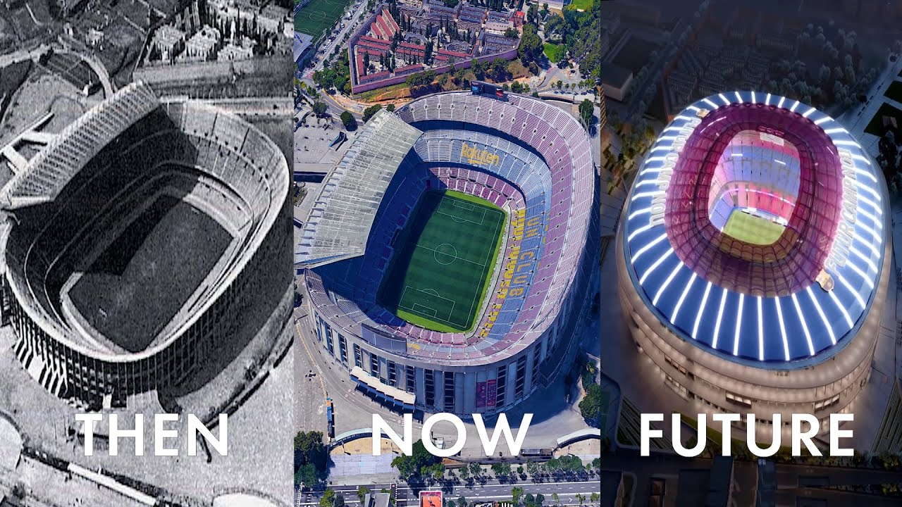

FC Barcelona History
The history of Futbol Club Barcelona begins from the football club's founding in 1899 up until the present day. FC Barcelona, also known simply as Barcelona and familiarly as Barça, is based in Barcelona, Catalonia, Spain. The club was founded in 1899 by a group of Swiss, Catalan, German, and English footballers led by Joan Gamper. The club played amateur football until 1910 in various regional competitions. In 1910, the club participated in their first of many European competitions, and has since amassed fourteen UEFA trophies and a sextuple. In 1928, Barcelona co-founded La Liga, the top-tier in Spanish football, along with a string of other clubs. As of 2023, Barcelona has never been relegated from La Liga, a record they share with Athletic Bilbao and arch-rival Real Madrid. The history of Barcelona has often been political. Though it was a club created and run by foreigners, Barcelona gradually became a club associated with Catalan values. In Spain's transition to autocracy in 1925, Catalonia became increasingly hostile towards the central government in Madrid. The hostility enhanced Barcelona's image as a focal point for Catalonism, and when Francisco Franco banned the use of the Catalan language, the stadium of Barcelona became one of the few places the people could express their dissatisfaction. The Spanish transition to democracy in 1978 has not dampened the club's image of Catalan pride. In the 2000s and 2010s – a period of sporting success in the club and an increased focus on Catalan players – club officials have been openly faithful to historic club commitment to the defense of the country, democracy, freedom of expression, and the right to decide, and have condemns any action that may impede the full exercise of these rights.
Club Achievements
FC Barcelona is one of the most successful football clubs in the world, In international club football, the club has won 22 European and worldwide titles: five UEFA Champions League titles, a record four UEFA Cup Winners' Cups, a joint record five UEFA Super Cups, a record three Inter-Cities Fairs Cups, a joint record two Latin Cups, and three FIFA Club World Cups.
| TITLES 🏆 | |||||
|---|---|---|---|---|---|
| Champions League | FIFA Club World Cup | European Super Cup | Spanish League Championship | Copa del Rey | Spanish Super Cup |
| 5 | 3 | 5 | 27 | 31 | 14 |
Legendary Players
FC Barcelona has been home to some of the greatest footballers in history, including Lionel Messi, Johan Cruyff, Ronaldinho, and Xavi Hernandez, Ronaldo, Romario, Maradona, Rivaldo, Laudrup, Schuster and many others.
Camp Nou Stadium
Camp Nou (Catalan pronunciation: [ˌkamˈnɔw], meaning "New Field", often referred to in English as the Nou Camp), branded as Spotify Camp Nou for sponsorship reasons, is an under-renovation stadium home of La Liga club Barcelona since its opening in 1957. With a planned seating capacity of 105,000, it will be the stadium with the largest capacity in Spain and Europe, and the second largest football stadium in the world.
The latest from FC Barcelona, explore match highlights, player profiles, and more!.